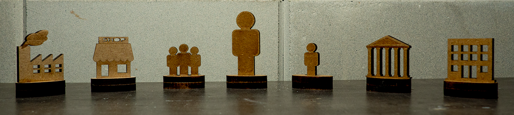
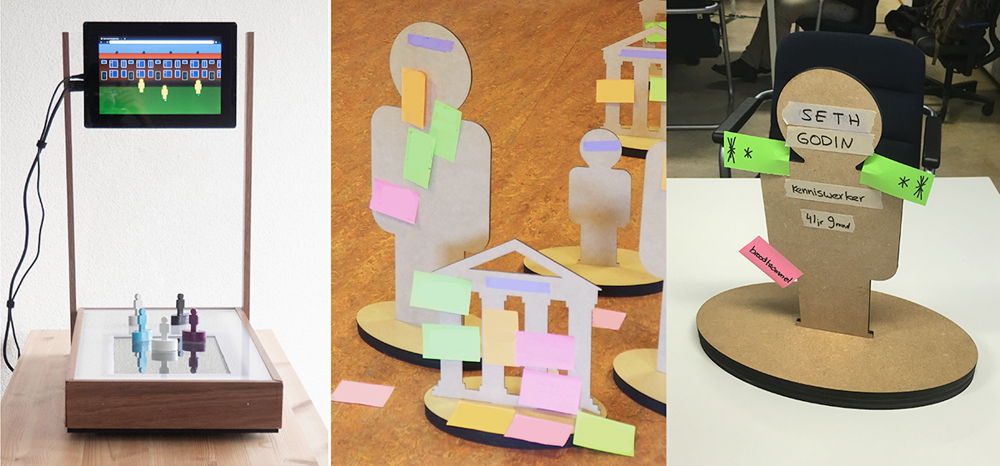

Crafstmen reshape reality with tools and techniques and reshape tools as well. I created three tools to reshape reality, the System Constellation Play XL, System Constellation Play Small and the Perception board.
The System Constellation Plays are sets of 'low-res' wooden artefacts we call characters. These characters represent an organisation, community, group or person. The characters are placed on a flat surface like a floor or table. The thoughtfull placement creates a two dimensional constellation of characters. This constellation is an overview on positions of the actors in the network. Observers of the constellation see the different stages from all perspectives which enrich the insights on the structure of a multi-actor network.
The System Constellation Play is used in the Satis-Action method and is currently made in two sizes, XL and Small. The System Constellation Play XL is used for User-journeys and Showcases during workshops in large rooms on the floor. The System Constellation Play Small is used by care professionals or coaches in meetings with clients to explain their situation within a multi-actor network.
The Perception board is an instrument with two monitors and characters from the System Constellation Play Small. On a horizontal monitor a specific background is visualised and the characters are placed by a single professional on the horizontal monitor. This creates a specific constellation of the relevant actors in the network as perceived by the profesional. On a vertical monitor the same constellation is visualised from a landscape view. The different views give more perspectives on the constellation and thereby gives information for the professional to create a more acurate perception on the specific constellation of the case at hand.
The Perception board is created during a studyproject and observed by experts and scolars during the universities Demoday for different applications. The digital demonstrator is not tested in a reallife case and now dismantled. The concept can be executed in an analog setting.
